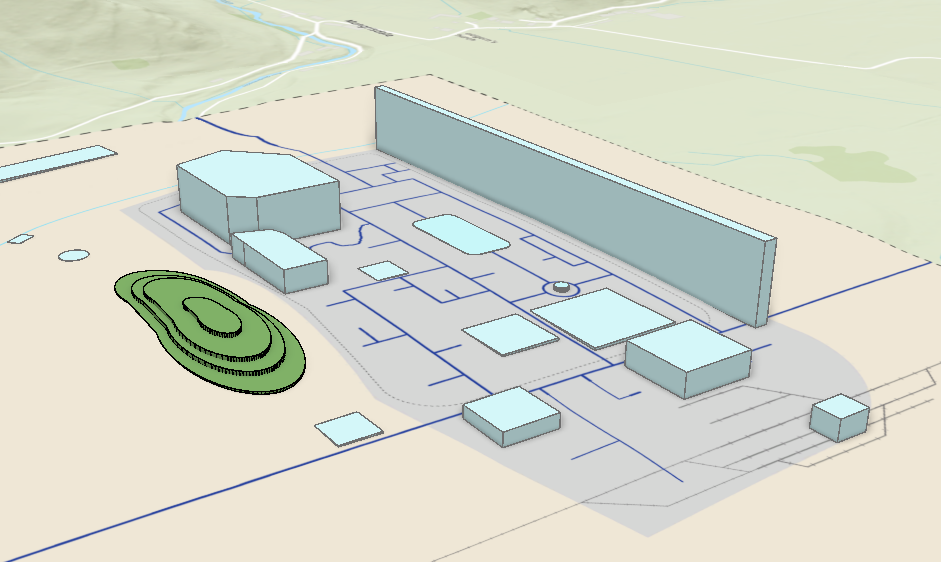

My Capstone Resume

Summary:
This website will not only display my qualifications and work experience, it will also be used as a personal reminder of my progress as a web developer
Qualifications
- BA (1st class honours) in Geographical and Archaeological Sciences
- Quercus College Scholarship in both available years
- PRO for the UCC Archaeological Society
Work Experiences
- Graduate GIS Analyst at TLI, responsible for creating and maintaining maps for Non-Standard Fibre Cabling Connections
- General Operative at Sysco, responsible for processing PO's and asigning trucks to bays. Trained to operate PPT
Skills
Trained to operate powered pallet truck and forklift to professional standard. Computer skills include the Microsoft Office suite of projects, basic python programming and basic html/web development.
GIS skills include ArcGIS Pro, ESRI Field Apps, QGIS and some python (geopandas, arcPy)